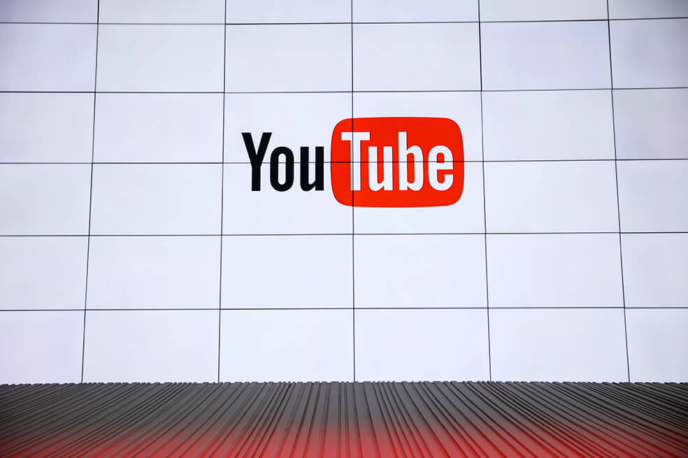

Estudiantes de la Sabana crean vehículo 100% amigable con el ambiente
Un prototipo de vehiculo, construido por estudiantes de la Universidad de la Sabana, cien por ciento amigable con el medio ambiente y que no emite ningún contaminante a la atmósfera, estará en una competencia internacional de eficiencia energética.
La institución informó que se trata de la Shell Eco-Marathon Américas, una de las más importantes del mundo, en la que ya han estado representantes de la institución.
El año pasado los estudiantes ocuparon el puesto 11 entre 24 países que hicieron parte de la competición en la categoría de prototipos eléctricos
Un comunicado de la Universidad indica que en esta oportunidad los estudiantes de ingeniería "se aseguraron de hacer un carro más eficiente, pues mientras que en un vehículo eléctrico convencional el consumo energético está entre ocho kilómetros por kilowatts-hora, el prototipo de la Universidad está en 160 kilómetros por kilowatts- hora, lo que lo hace más competitivo".
“Este año mejoramos el carro, lo hicimos más veloz y eficiente. Es así que, para obtener mejores resultados, se consolidó todo el sistema de fricción mecánica para aumentar la eficiencia y así evitar que las ruedas se frenen constantemente. Igualmente, se hicieron ajustes en el tren de potencia al implementar un motor con mejor resultado en el consumo energético”, sostiene Julián Mauricio Echeverry, director de Ingeniería Mecánica de la Facultad de Ingeniería.
La universidad también detalló que este año el evento nuevamente se correrá en el autódromo Sonoma Raceway - California, en el que se corren carreras de la Indycar y Nascar. El evento se llevará a cabo entre el 3 y el 6 de abril.
"Los ganadores de esta competencia serán los que logren reunir la mejor eficiencia energética en sus vehículos por el diseño del tren de potencia y de la estructura, su selección de materiales, y las habilidades de sus pilotos", informó la universidad, que también indicó que "en un futuro se espera que esta clase de prototipos se utilicen para transportar personas al interior de centros comerciales y universidades".
Microsoft anuncia el final de Windows 7
El sistema operativo dejará de recibir soporte de su casa matriz. Lo anterior se traduce en que se convertirá en una plataforma más insegura y, con el paso del tiempo, obsoleta.
Luego de 10 años de recibir soporte, Microsoft abandonará Windows 7 para concentrar sus esfuerzos en el desarrollo de nuevos productos. Así lo anunció la compañía, por medio de su página web, en la que ofrece breves recomendaciones ante este hecho que, sin lugar a dudas, afecta a más de un usuario.
En concreto, el fin del soporte que hasta la fecha Microsoft continúa brindando a Windows 7 será el próximo 14 de enero.
Lo anterior, según lo descrito por la empresa tecnológica, se traduce en que Microsoft dejará de proporcionar: soporte técnico a los usuarios de este sistema operativo ante la presentación de un problema, actualizaciones de software y actualizaciones de seguridad o arreglos.
En su entrevista con El Espectador, el director de productos cloud para Microsoft, Edmundo Miralles, resumió los anteriores puntos en dos: mayor riesgo de ser infectados por un virus, o malware y, la futura obsolescencia del equipo.
Lea también: Google cumple 20 años: ¿Cómo nos cambió la vida?
Los equipos serán más inseguros porque los trabajadores de Microsoft dejarán de parchar las brechas, es decir, que si un atacante más adelante descubre una puerta en el sistema por la que se puede meter y hacer daños lo va poder hacer sin ninguna resistencia.
En cuanto a la obsolescencia, los desarrolladores de software dejarán de ofrecer versiones de sus programas para este sistema operativo.
Sin embargo, lo anterior no quiere decir que las máquinas vayan a quedar inservibles, al contrario, seguirán funcionando, pero con los detalles descritos anteriormente.
Al respecto, Miralles recomienda a las compañías actualizar sus equipos, puesto que la obsolescencia y la inseguridad representan grandes problemas para la misma. No obstante, reconoce que una inversión como esta puede ser elevada, razón por la que muchas empresas no actualizan sus equipos, no solo por el costo de los mismos, sino porque hay casos en el que además tendrían que destinar recursos para realizar nuevas versiones del software con el que laboran sus empleados.
Lea también: Windows 7, la salvación de Microsoft
Finalmente, aseguró que esta no fue una decisión que se haya tomado a la ligera, o por uno u otro factor especial. La razón por la que Windows 7 comenzará a desaparecer se debe a que ya cumplió su ciclo, 10 años es el periodo en el que esta compañía invierte esfuerzos para dar vida a sus soluciones.
Es importante aclarar que Microsoft no tomó esta decisión de la noche a la mañana, de hecho, la anunció hace aproximadamente dos años, tiempo en el que ofreció, de manera gratuita la actualización a una nueva versión.
Posibles soluciones para quienes se resisten al cambio
De entrada hay que decirlo, no existe ninguna alternativa gratuita que le permita a una persona u organización seguir manejando Windows 7 y disfrutar de seguridad y actualizaciones.
Según Miralles, dentro de las alternativas que se presenten para quienes se vean impactados por esta noticia se encuentra comprar un software de actualización, o pagar por un soporte de tiempo extendido a Microsoft.
Sin embargo, insiste en que la principal recomendación siempre será comprar una nueva máquina, esto porque Microsoft, como sistema operativo, ha trabajado en actualizaciones como pantallas táctiles e inicios de sesión más rápidos.
Dentro de las recomendaciones que brinda Microsoft ante esta noticia destaca el realizar una copia de seguridad, para prevenir cualquier pérdida o robo de información.
12GB de RAM y otros ‘superpoderes’ del nuevo Xiaomi Black Shark 2
La nueva apuesta 'gaming' de esta marca china también incorpora un procesador Snapdragon 855 y una pantalla Amoled de 6,9 pulgadas.
Black Shark de Xiaomi, la línea de smartphones pensada para un público amante de los videojuegos, presentó en la ciudad de Pekín (China) la segunda edición de su terminal: el Black Shark 2.Son muchas las características de este nuevo dispositivo que, a primera vista, salen a relucir. Seguramente una de las protagonistas es la integración de una memoria RAM de 12 GB que, de la mano del último procesador de Qualcomm, el Snapdragon 855, prometen un rendimiento más que sobresaliente en el dispositivo.
Sumado a lo anterior, el Black Shark 2 viene equipado con una memoria de almacenamiento interno de hasta 256GB y una batería de carga rápida de 4.000 miliamperios. Aquí es importante precisar que el abastecimiento energético desde dispositivo es de 27W, característica que le permite, con cinco minutos de carga, ofrecer media hora de juego.
Le puede interesar: Redmi 7: la apuesta china para conquistar el mercado de los precios bajos Por lo demás hay que decir que la nueva entrega de Xiaomi dispone de una pantalla Amoled de 6,39 pulgadas y una batería de tres cámaras en su apartado fotográfico, dos en la parte trasera, de 12 y 12 megapíxeles, y una en la parte frontal de 20 megapíxeles.
Privilegiar la cámara frontal en cantidad de megapíxeles, probablemente se deba a la creciente tendencia de hacer transmisiones en vivo mientras se juega. De esta forma, los gamers podrían subir a plataformas como Twitch directos de partidas a la vez que se ven en gran calidad narrando las partidas.
Le puede interesar: El imperio de Twitch
El que un dispositivo esté diseñado para ejecutar bien videojuegos no quiere decir que descuide el apartado fotográfico, de hecho, en la prueba que El Espectador hizo al ROG Phone, la apuesta gamer de ASUS, la cámara de ese terminal demostró comportarse mejor en escenas oscuras que la del iPhone XR.
Finalmente, pero no menos importante, el diseño del Black Shark 2, muy al estilo gamer, viene con iluminación en su parte trasera, específicamente en un bisel que rodea el centro del teléfono y enmarca el logo de Black Shark, que también se ilumina.
El precio de este dispositivo varía dependiendo de la cantidad de memoria interna y RAM que incorpore. En concreto existen dos presentaciones, la más económica, de 8GB de RAM, arranca por cerca de $1.700.000 y, la más pro, con las 12 GB de RAM, ronda los $2.000.000.
Es importante aclarar que estos son precios de referencia, ya que el valor puede variar dependiendo de factores como costos de importación y estrategias de comercialización.
Le puede interesar: En Bogotá se realizará la final de la liga eSports más importante de América Latina

Inteligencia Artificial de Google no logra bloquear video de ataque en Nueva Zelanda
Así pudieron engañar al software de Google para que no identificara y bloqueara las imágenes violentas del tiroteo contra dos mezquitas.
YouTube ha intentado mantener los videos violentos y de odio fuera de su servicio durante años. La unidad de Google contrató a miles de moderadores humanos y puso algunas de las mejores mentes en inteligencia artificial a trabajar en el problema.
El jueves, nada de eso logró detener a un hombre armado que usó las redes sociales para transmitir su ola de asesinatos en una mezquita de Nueva Zelanda, mientras legiones de publicadores en línea engañaban al software de YouTube para difundir el video del atacante
Cuando el alboroto fue transmitido en vivo por Facebook, la policía alertó a la red social, que eliminó el video. Pero para entonces había sido capturado por otros, quienes lo volvieron a publicar en YouTube. Google dijo que estaba "trabajando de manera vigilante para eliminar cualquier filmación violenta". Aún así, muchas horas después, aún se podía encontrar, un desconcertante recordatorio de hasta dónde deben llegar las gigantescas empresas de Internet para comprender y controlar la información compartida en sus servicios.
"Una vez se ha determinado que el contenido es ilegal, extremista o una violación de sus términos de servicio, no hay absolutamente ninguna razón por la que, en un periodo relativamente corto, este contenido no pueda eliminarse automáticamente en el punto de carga", asegura Hany Farid, profesor de informática en la Escuela de Información de la Universidad de California en Berkeley. "Hemos tenido la tecnología para hacerlo por años".
YouTube ha trabajado para impedir que ciertos videos aparezcan en su sitio durante años. Una herramienta, llamada Content ID, ha existido por más de una década. Le brinda a los propietarios de derechos de autor, como los estudios de cine, la capacidad de reclamar el contenido como propio, recibir un pago por él y eliminar las copias piratas. Se ha utilizado tecnología similar para incluir en la lista negra otro contenido ilegal o indeseable, como pornografía infantil y videos de propaganda terrorista.
Hace unos cinco años, Google reveló que estaba usando técnicas de IA como el aprendizaje automático y el reconocimiento de imágenes para mejorar muchos de sus servicios. La tecnología fue aplicada a YouTube. A principios de 2017, 8 % de los videos marcados y eliminados por extremismo violento se eliminaron con menos de 10 visitas. Después de que YouTube introdujera un sistema de señalización impulsado por aprendizaje automático en junio de 2017, más de la mitad de los videos extraídos por extremismo violento tenían menos de 10 visitas, informó en un blog.
A los medios no les gusta lo nuevo de Apple News
El lunes próximo, en su campus de Cupertino, California (Estados Unidos), Apple revelará su anticipado servicio de transmisión de video.
Pero, aunque ese lanzamiento ha ocupado los titulares, otro no menos significativo podría ocurrir a su sombra: el de un pequeño pero trascendental cambio en Apple News, que en virtud de este pasaría a ser un servicio que permita a los usuarios leer una cantidad ilimitada de noticias de medios asociados, a cambio de una tarifa mensual.
El cambio a su aplicación Apple News es un proyecto en el que la firma ha trabajado por más de un año, pero que desde antes de ser lanzado enfrenta el rechazo de grandes editoriales y medios que ven en él un nuevo envión de la compañía por una tajada de sus ya debilitados ingresos.En concreto, Apple agregaría un servicio de suscripción a revistas digitales que es descendiente directo de la compra, en marzo del año pasado, de Texture, una start-up que llegó a ser descrita como “el Netflix de la prensa”.
Apple lanzó un nuevo iPad Air y un nuevo iPad Mini
Qualcomm gana el primer juicio contra Apple en su guerra de patentes
Cuando fue fundada, en 2009, Texture se llamaba Next Issue Media y contaba con el respaldo de los principales editores de revistas de Estados Unidos, como Hearst y Condé Nast. En el momento de adquirirla, Apple dijo que se proponía encontrar la mejor fórmula para atraer a los lectores.
El modelo no convence
El sinsabor de la industria tiene que ver con la estrategia de contenidos detrás de Apple News, pues temen que perjudicaría sus ingresos por publicidad. Además, a muchas de estas empresas, que dependen de los ingresos de los suscriptores, les interesa más que las personas visiten sus artículos directamente en sus propios sitios web y así mantener un control sobre métricas y experiencia de usuario, en lugar de cederlo a un tercero.
Pero, según medios como Recode y The Wall Street Journal, en el fondo estaría la negativa de los grandes medios a aceptar un negocio en el que la firma de la manzana se quedaría con el 50 por ciento de los ingresos por concepto de suscripciones.
Uno de los más reacios a aceptar la estrategia de Apple ha sido The New York Times. El reconocido diario de la Gran Manzana redujo recientemente el número de historias que sube a la aplicación (en su versión actual) de noticias de Apple. “Intentamos ser inteligentes en nuestra forma de pensar acerca de nuestras asociaciones con estas plataformas”, dijo el director ejecutivo del Times, Mark Thompson, en la Oxford Media Convention en Inglaterra, en respuesta a una pregunta sobre la relación de su compañía con los gigantes tecnológicos.
Thompson dijo que su periódico también mantiene una distancia táctica con Facebook que por eso limita la cantidad de historias que pone allí.
“No queremos que el consumo principal del Times sea en Facebook”, dijo.
El periódico gasta “mucho dinero” en la publicidad paga de Facebook para impulsar las suscripciones, agregó, y considera que la plataforma es buena para la comercialización.
El propio diario neoyorquino reportó que el proyecto Apple News se ha venido preparando desde 2018 con más de una docena de periodistas que se encargarán de seleccionar y destacar las publicaciones del medio que “mejor cuente” cada noticia según considere el equipo editorial.
En su reporte, indicó que Apple ha mostrado poca transparencia sobre quién escogerá las historias para Apple News y cómo esas personas evitarán los prejuicios.
Una de las mayores quejas de los grupos editoriales es que el target de Apple News ofrece menos posibilidades de monetización y, por consiguiente, dificultaría la venta de anuncios, porque el servicio se limita únicamente a los usuarios iOS.
(...) El proyecto Apple News se ha venido preparando desde 2018 con más de una docena de periodistas
Reino Unido estudiará norma que prohibe los scooters eléctricos
El gobierno británico analizará qué normas deben actualizarse para ponerse al día con los cambios tecnológicos en materia de movilidad, tanto de mercancías como de las personas. El proyecto legislativo contempla integrar las patinetas eléctricas (scooters) y las bicicletas de carga con el fin de simplificar el transporte y los métodos de pago.
El Departamento de Transportes (DTF por su sigla en inglés) afirmó que esta es "la mayor revisión regulatoria en una generación" de las leyes de transporte actuales, de las cuales algunas siguen vigentes desde hace 184 años como la Ley de Carreteras de 1835, que estipula que los senderos 'deben ser para uso exclusivo de los peatones'.
De scooters y globos: Todo lo que Tecno
Ya ruedan 1.000 patinetas eléctricas en el norte y en el sur
En Medellín están probando dos semáforos inteligentes
"Estamos en un momento potencialmente crucial para el futuro del transporte, con tecnologías revolucionarias que crean enormes oportunidades", afirmó el ministro de transportes británico, Jesse Norman, en un comunicado. "A través de esta estrategia, el gobierno apunta a aprovechar estas innovaciones", añadió.
Entretanto, los scooters eléctricos están prohibidos en las carreteras de Reino Unido y clasificados como vehículos motorizados que también están sujetos a impuestos, licencias de conducir y seguros. Es por esto que la aparición de nuevos modelos de negocios, como el de la movilidad compartida de automóviles, también ha llevado a muchos gobiernos a repensar el transporte urbano.
Aunque el Departamento de Transportes dijo que "no hay planes inmediatos para legalizar las patinetas eléctricas” afirmó que es “una oportunidad crucial para el futuro del transporte, con tecnologías revolucionarias para viajes más limpios, más baratos, más seguros y más confiables”.
Es una oportunidad crucial para el futuro del transporte, con tecnologías revolucionarias para viajes más limpios, más baratos, más seguros y más confiables”.
Noa Khamallah, vicepresidenta de estrategia global en Voi Technology AB, una de las mayores empresas europeas de e-scooter, dijo que el Reino Unido era un mercado muy atractivo para realizar lanzamientos. Pero la regulación no es amigable.
En consecuencia, y como compromiso de la modernización de la legislación, el gobierno británico lanzó un concurso que ofrecerá 119 millones de dólares para probar ideas que mejoren los viajes de las personas en todo el país.